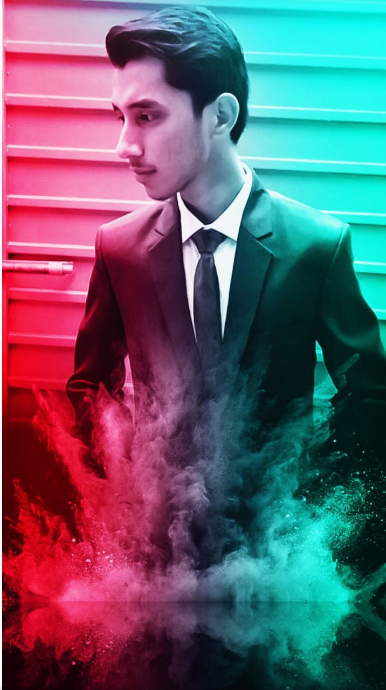
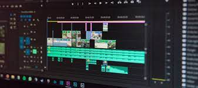
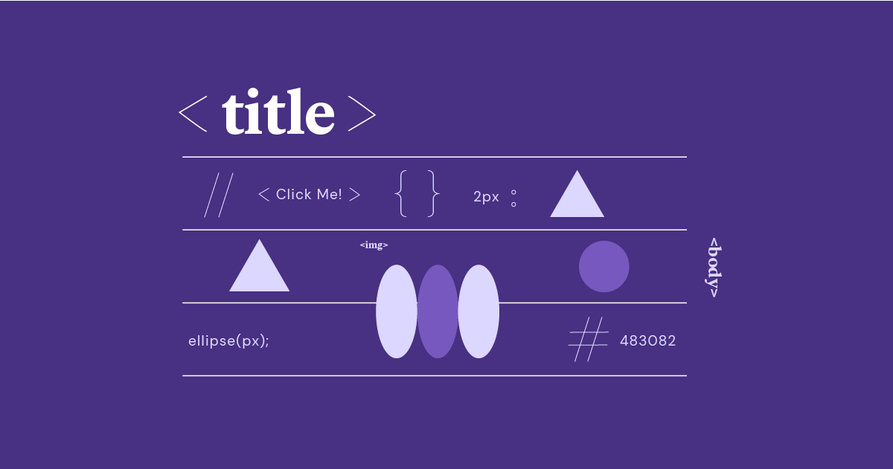

Hi my name is Muneej
I provide professional web development services, specializing in HTML, CSS, PHP, JavaScript, and
React.js. I also offer video editing and social media management expertise.

Work Experience

Video editor (ongoing from 2020)
Experienced in video editing since 2020, specializing in projects for YouTube channels and various
social media platforms. Proficient in utilizing software such as Filmora9 and Adobe Premiere Pro to
craft engaging and high-quality videos. Accomplished in delivering visually appealing content that
captivates audiences and enhances brand presence. Skilled in visual storytelling, pacing, and
maintaining viewer engagement. Successfully completed numerous projects, showcasing a strong track
record of meeting client expectations and producing compelling video content.

Front-end developer (ongoing from 2022)
Engaged in front-end web development since 2022, primarily focused on utilizing HTML, CSS, and
ReactJS. Gained hands-on experience through university projects, demonstrating proficiency in
creating dynamic and visually appealing web interfaces. Committed to staying updated with the latest
trends and best practices in web development to deliver user-friendly and responsive designs.l
IT Instructor (2022 - 2023)
Fulfilled the role of IT Instructor at Al-Noor Science School from 2022 to 2023. Played a key role
in imparting IT knowledge to students, contributing to their technological literacy. Designed and
delivered effective instructional materials to facilitate learning in various aspects of information
technology. Demonstrated strong communication skills and the ability to convey complex technical
concepts in an understandable manner.